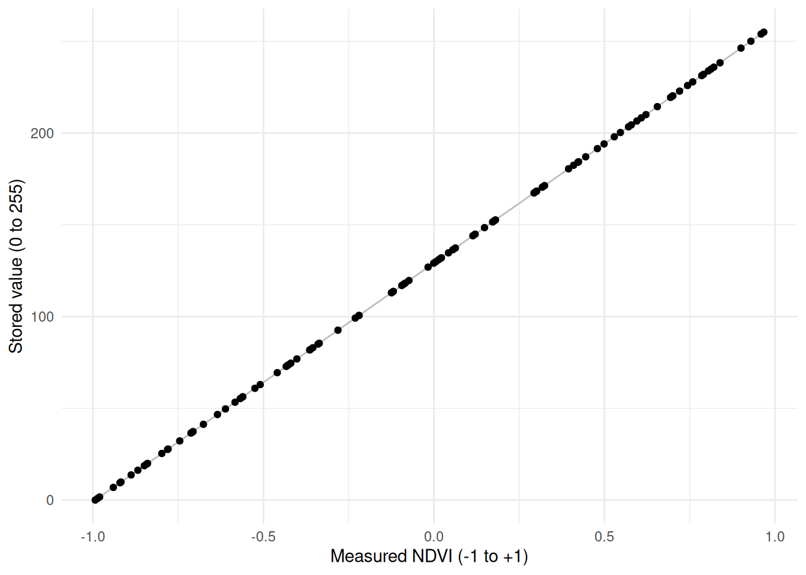
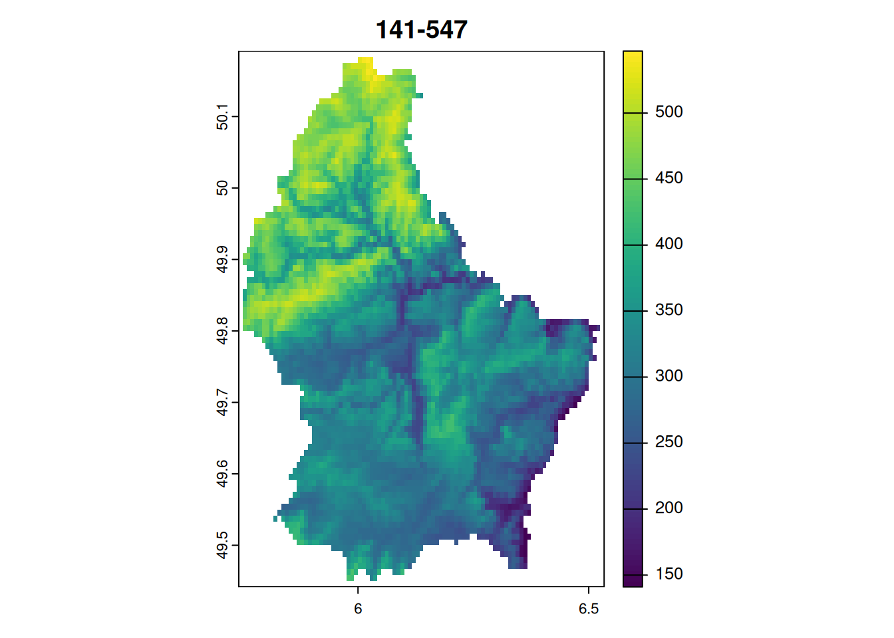

scale_minmax <- function(
x,
a = 0, # the minimum value of the new range (default 0)
b = 255 # the maximum value of the new range (default 255)
){
min_x = min(x)
max_x = max(x)
a + (x - min_x) * (b - a) / (max_x - min_x)
}Data types / transformations
Raster data types
- While R and Python have a variety of data types including character strings, raster data is always stored as numeric
- However, there are quite a number of numeric data types that can be used to store raster data, depending on the range of values and the precision required
- The choice of data type can have a significant impact on the size of the file and the precision of the data stored
- Since raster data is powered by GDAL, most raster based software (including R and Python) use the same data types when writing the file to disk
- The numeric data types are supported by
gdalare summarized in Table 13.1
gdal (source: Amatulli 2024)
| Data type | Minimum | Maximum | Size1 | Factor |
|---|---|---|---|---|
| Byte | 0 | 255 | 39M | 1x |
| UInt16 | 0 | 65,535 | 78M | 2x |
| Int16 / CInt16 | -32,768 | 32,767 | 78M | 2x |
| UInt32 | 0 | 4,294,967,295 | 155M | ~4x |
| Int32 / CInt32 | -2,147,483,648 | 2,147,483,647 | 155M | ~4x |
| Float32 / CFloat32 | -3.4E38 | 3.4E38 | 155M | ~4x |
| Float64 / CFloat64 | -1.79E308 | 1.79E308 | 309M | ~8x |
- If you store categorical data, use integer datatype and store the corespondence in the metadata
- Always be minimalistic about which datatype you need.
- Question if you have a continuous value from 0 to 1, which datatype do you use?
- Not
Float32! But Multiply by 100 and useByteor by 1000 (if you need more precision) and useUInt16
- Not
- Question: if you are measuring temperature, and your values are floating point ranging is -20 to +40 degrees, what datatype are you going to use?
- Not CFloat32!
- Multiply by 100 and use
CInt16
- Question: if you compute NDVI and have values in the range 0 - 1, what datatype do you use?
- Not
Float32, but notCInt16either: - Transform the values to 0 - 255
- Not
Choosing a data type
- To minimize file size, it’s important to choose the data type that best fits the range of values in the raster
- At a first glance, it might seem that the numeric values we measured / calculated determine the datatype we use
- However, we can transform the values to a different range to fit a different datatype
- Example 1: Fraction values ranging from 0 to 1
- It might seem that we need to use
Float32to store these values. - However, we can turn fraction into percentages and store them as
Bytedatatype.
- It might seem that we need to use
- Example 2: NDVI values ranging from -1 to 1
- It might seem that we need to use
CFloat32to store these values. - However, we can transform (rescale) these values to the range 0 - 255 and store them as
Bytedatatype.
- It might seem that we need to use
Rescaling / Transforming values to 0 - 255
From Wikipedia:
To rescale a range between an arbitrary set of values [a, b], the formula becomes: \[x' = a + \frac{(x-min(x))\times(b - a)}{max(x)-min(x)}\]
For the NDVI usecase, we can consider:
- \(x'\) to be the stored value
- \(x\) to be the measured value
- \(a\) and \(b\) to be the maximum, minimum value of
Byte(0 and 255 respectively) - \(min(x)\) and \(max(x)\) the maximum and minimum measured values (
-1and1respectively)
We can use these values and simplify the formula as follows:
\[\begin{align} x' &= 0 + \frac{(x+1)\times 255}{2} \\ x' &= \frac{255x+255}{2} \\ x' &= 127.5x+127.5 \\ \end{align}\]
Rescaling NDVI values
- We can now use this formula \(x' = 127.5x+127.5\) to rescale NDVI values to the range 0 - 255
- So, rather than storing the NDVI value 0.2, for example, we store the value 153
- This rescaling is determined by two values:
scaleandoffset(127.5 for both values in our case)
Precision
Note that this transformation to 255 values limits our precision:
- Our values are now limited to in their precision, since we only have 255 possible values
- We can calculate the available precision like so: \(\frac{max(x)-min(x)}{b-a}\)
- In our case this is \(\frac{1 - (-1)}{255-0} = 0.0078\).
- Any measured / calculated NDVI value will be rounded to a multiple of 0.0078.
R Implementation for vectors
- A generic way to implement this in R is as follows:
Take the following example:
set.seed(552)# this creates 100 random NDVI values between -1 and 1
ndvi_measured <- runif(100, -1, 1)
ndvi_stored <- scale_minmax(ndvi_measured)
tibble(ndvi_measured, ndvi_stored) |>
ggplot(aes(ndvi_measured, ndvi_stored)) +
geom_line(col = "grey") +
geom_point() +
labs(x = "Measured NDVI (-1 to +1)", y = "Stored value (0 to 255)") +
theme_minimal()
Restoring the original values
- Imagine you stored the NDVI values in the range 0 - 255, stored these values in a Geotiff and sent it to a colleague.
- To restore the original NDVI values the transformation (\(x' = 127x+127.5\)) needs to be known
- More precisely, the
scaleandoffsetvalues need to be known - We can simply invert the transformation to get the original values back: \(x = \frac{x'-127.5}{127.5}\)
R implementation for rasters I
- Since rescaling values is a common operation, it is supported by GDAL and therefore most raster libraries
- Rather than transforming our values in memory, we can transform them when writing the raster to disk.
- For this, we can use the arguments
scale =andoffset =in thewriteRasterfunction - To use these arguments we need to calculate the
scaleandoffsetvalues first - Rewriting the formula above, we can calculate
scaleandoffset:
\[\begin{align} \text{scale} &= \frac{b - a}{max(x)-min(x)} \\ \text{offset} &= \frac{a \times max(x) - b \times min(x)}{max(x)-min(x)} \end{align}\]
- To implement this in R, I create a function:
get_scale_offset:
get_scale_offset <- function(
x,
a = 0, # the minimum value of the new range (default 0)
b = 255 # the maximum value of the new range (default 255)
){
min_x = min(x)
max_x = max(x)
scale <- (b - a) / (max_x - min_x)
offset <- (a * max_x - b * min_x) / (max_x - min_x)
list("scale" = scale, "offset" = offset)
}
get_scale_offset(ndvi_measured)$scale
[1] 130.0526
$offset
[1] 129.1798R implementation for rasters II
- The new function
get_scale_offsetworks nicely with vectors, but not with rasters - The reason it does not work for raster is that
min(x)(andmax(x)) are local and not global functions- They return the minimum / maximum value per cell over all bands, not the global minimum / maximum value
- To calculate the global minimum and maximum value, we can either use
global, or the slightly fasterminmaxfunction
- Additionally, the
writeRasterfunction will divide byscaleand subtractoffsetfrom the values (see?writeRaster), so we need to invert the two values - This is how this is implemented in R:
get_scale_offset2 <- function(
x,
a = 0,
b = 255
){
library(terra)
min_max = minmax(x)
# careful, this function is currently designed for single band rasters only
min_x <- min_max[1,1]
max_x <- min_max[2,1]
scale <- (b - a) / (max_x - min_x)
offset <- (a * max_x - b * min_x) / (max_x - min_x)
scale_inverted <- 1/scale # invert the scale, since writeRaster divides by scale
offset_inverted <- offset * -1 # invert the offset, since writeRaster subtracts the offset
list("scale" = scale, "offset" = offset, "scale_inverted" = scale_inverted, offset_inverted = offset_inverted)
}R implementation for rasters: example
- Let’s import a raster, calculate the
scaleandoffsetvalues and use these values to write to disk
library(terra)
elev <- rast(system.file("ex/elev.tif", package="terra"))
plot(elev, main = paste(minmax(elev),collapse = "-"))
scale_offset <- get_scale_offset2(elev)
# Note: this implementation leads to NA's due to floating point errors.
# 141 * 1/1/1.592157 + 88.55911*-1 = -4.333913e-06
# I haven't found a solution for this yet.
writeRaster(
elev,
"data-out/INT1U.tif",
datatype = "INT1U",
overwrite = TRUE,
scale = scale_offset$scale_inverted,
offset = scale_offset$offset_inverted
)R implementation for rasters: example
- Since GDAL stores the
scaleandoffsetvalues in the metadata, any software powered by GDAL will restore the original values on import - In other words, if you run
rast("data-out/INT1U.tif")you will not notice the values were internally stored using 0 - 255. Instead, you will retrieve the original values. - To finish off, let’s compare the file sizes of the raster stored as
INT1U(Byte) andFLT8S(Float32)
writeRaster(
elev,
"data-out/FLT8S.tif",
datatype = "FLT8S",
overwrite = TRUE
)
file.size("data-out/INT1U.tif")/file.size("data-out/FLT8S.tif")[1] 0.537006Difference in file size using constant dataset (same values and resolution) and varying the datatype↩︎